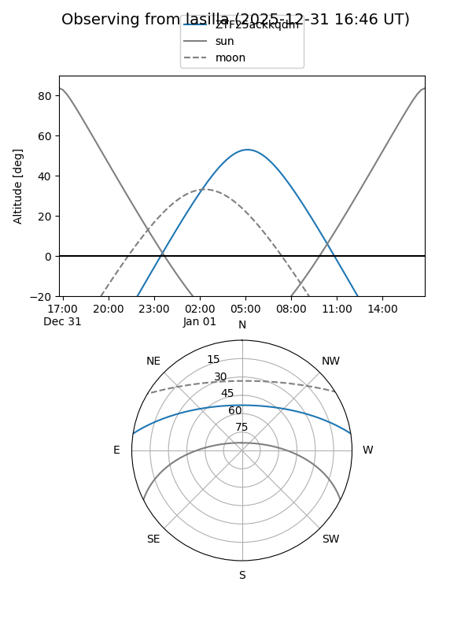
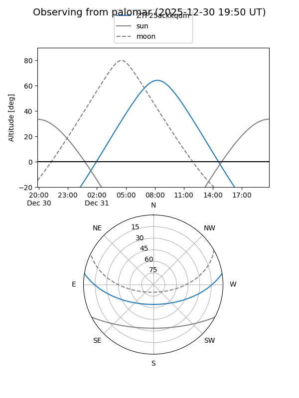
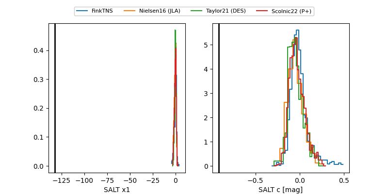

ZTF25ackkqdm
Target ZTF25ackkqdm at 2025-12-24 18:38
Aliases and brokers:
FINK: fink-portal.org/ZTF25ackkqdm
Lasair: lasair-ztf.lsst.ac.uk/objects/ZTF25ackkqdm
ALeRCE: alerce.online/object/ZTF25ackkqdm
alt names
ZTF25ackkqdm (ztf,fink_ztf)
Coordinates:
equatorial (ra, dec) = 106.8571,+7.71534
equatorial (HMS+DMS) = 07:07:25.70,+07:42:55.23
galactic (l, b) = (207.8459,+7.04796)
Flags:
likely cv
Photometry:
last ztfg=19.74, ztfr=19.22
2 ztfg, 1 ztfr detections
Lightcurve

Visibility


Additional plots
